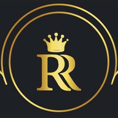

Rajaram Marmo
Unified operational command for natural marble, granite, and stone processing enterprises. Rajaram Marmo brings heavy stone-cutting machinery maintenance, multi-department HRMS & payroll, transport fleet logistics, purchase order procurement (PO), production block yield tracking, and a digital showroom CMS into one powerful platform.
Engineered for Heavy Manufacturing & Factory Precision
Heavy Machinery & Preventive Maintenance
Comprehensive tracking for gang saws, CNC routers, wire cutters, and line polishers. Monitor machine operational runtime hours, service history, breakdown logs, and spare part consumption.
Enterprise HRMS, Shifts & Automated Payroll
Complete employee directory, salary structures, daily attendance records, leave approval workflows, and monthly salary disbursement with printable worker payslips.
Fleet Transport Logistics & Driver Trips
Manage company vehicles, fitness/insurance validity, and assigned drivers. Record trip dispatch details, delivery destinations, freight billing, and driver fuel expense reconciliation.
Purchase Orders (PO), Goods Receipts & Vendors
Streamlined procurement from RFQ to fulfillment. Multi-line purchase order approvals, Goods Receipt Notes (GRN), damaged stock returns, and vendor credit ledgers.
Factory Expense Management & Cost Centers
Categorize plant operational costs: machinery power, factory consumables, repairs, transport maintenance, and administrative overheads for accurate monthly P&L analysis.
Block Processing, Production Jobs & Wastage
Raw block intake logs, gang-saw slab slicing jobs, square-foot production yield, surface finishing catalog (polished, honed, flamed, leathered), and scrap wastage audits.
Enterprise Architecture & System Specifications
| Application Architecture | Laravel 13 on PHP 8.3 + Livewire 4 + MySQL with dark luxury industrial UI |
|---|---|
| Core Operations Modules | Machine Maintenance, HRMS & Payroll, Transport Fleet Logistics, Purchase Orders (PO), Factory Expenses, Production Jobs |
| Showroom & Marketing CMS | Database-driven natural stone catalog, collections filter, gallery, dynamic pages CMS, and SEO sitemaps |
| Customer CRM & Communication | Client inquiry inbox with email threading, newsletter campaign scheduler, and activity audit log |
| Deployment & Security | Dedicated enterprise production deployment at rajarammarmo.com with role-based access permissions |
Frequently Asked Questions & Industry Comparisons
How is this platform a better alternative to SAP Business One or Marg ERP for natural stone?
Generic enterprise systems like SAP Business One or Marg ERP lack native support for stone quarrying and slab manufacturing logic—such as raw block cubic feet measurements, gang-saw slab slicing yield formulas, surface finish variations (flamed, honed, leathered), and truck transport freight trip logs. Rajaram Marmo was custom-engineered from the ground up to solve these exact factory-floor bottlenecks without costly multi-year consulting retainers.
Can CodeQuackers build a similar bespoke ERP for our manufacturing plant?
Yes. CodeQuackers delivers tailor-made operational systems, custom machinery telemetry platforms, multi-branch HRMS, and enterprise ERPs built on modern web stacks (Laravel, Vue, Livewire, Node.js) with fixed delivery sprints.